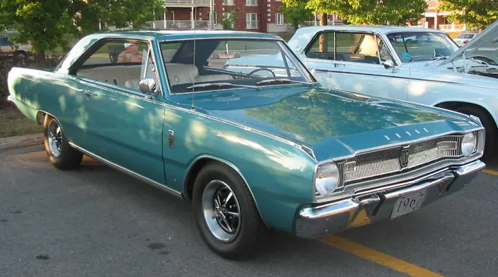
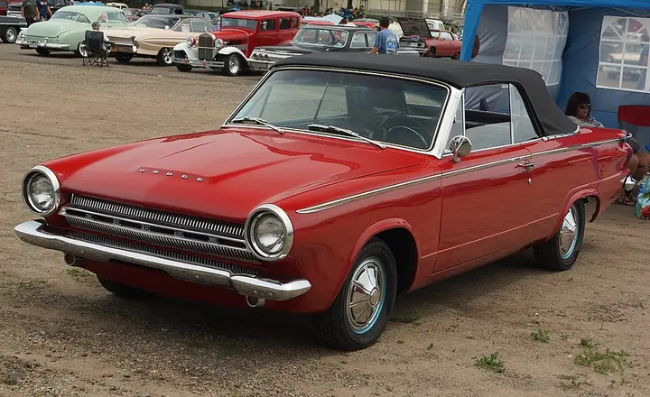
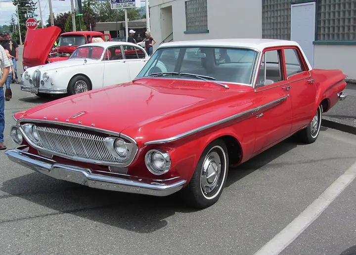
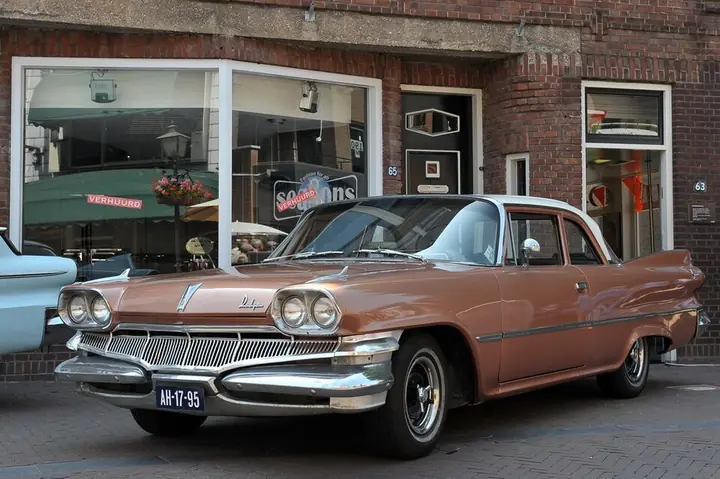

Dodge Dart
Dodge Dart (PF) · 2012–2017
Abstract
This generation of the Dodge Dart is a compact car (C), built May 2012 – September 2016 in United States: Belvidere, Illinois (FCA Belvidere Assembly Plant), China: Changsha, Hunan (GAC Fiat Chrysler). Body styles: 4-door sedan, 5-door hatchback (Fiat Ottimo). Layout: Front-engine, front-wheel drive. Designed by Tim Doyle, Michael Nicholas, Roberto Giolito (Ottimo).
.jpg){kind=link}
1Specifications
| Production | May 2012 – September 2016June 2012 – March 2017 (China) |
|---|---|
| Model years | 2012–2016 (China)2013–2016 |
| Assembly | United States: Belvidere, Illinois (FCA Belvidere Assembly Plant)China: Changsha, Hunan (GAC Fiat Chrysler) |
| Designer | Tim Doyle, Michael NicholasRoberto Giolito (Ottimo) |
| Class | Compact car (C) |
| Body style | 4-door sedan5-door hatchback (Fiat Ottimo) |
| Layout | Front-engine, front-wheel drive |
| Platform | Compact US Wide |
| Engine | Gasoline:1.4 L Fiat FIRE I4 turbo2.0 L GEMA/Chrysler Tigershark I42.4 L GEMA/Chrysler Tigershark I4 |
| Transmission | 5-speed manual (China)6-speed FPT C635 manual6-speed FPT C635 DCT7-speed FPT C725 DCT (China)6-speed Powertech 6F24 automatic |
| Wheelbase | 106.4 in106.6 in (Viaggio/Ottimo) |
| Length | 183.9 in184.2 in (Fiat Viaggio)178.9 in (Fiat Ottimo) |
| Width | 72.0 in72.8 in (Viaggio/Ottimo) |
| Height | 57.7 in57.9 in (Fiat Viaggio)58.1 in (Fiat Ottimo) |
| Weight | 3186–3348 lb |
| Also called | Fiat Viaggio (China)Fiat Ottimo (China, hatchback) |
| Related | Alfa Romeo GiuliettaChrysler 200 (UF) |
| Predecessor | Dodge CaliberDodge Avenger sedan |
| Successor | Dodge Neon (third generation) (Mexico) |
2Versions
- SE
- SXT
- Limited
- Aero
- GT
3Previous generations

.jpg){kind=link}

.jpg){kind=link}

.jpg){kind=link}


4Generation by generation
Length −13% from the first to the last
1960–1961 19595,347 mm
1963–1966 19624,978 mm
1967–1976 19664,983 mm
Dodge Dart (PF) 20124,671 mm
Weight −9% from the first to the last
1960–1961 19591,582 kg
1962 19621,492 kg
1967–1976 19661,315 kg
Dodge Dart (PF) 20121,445 kg